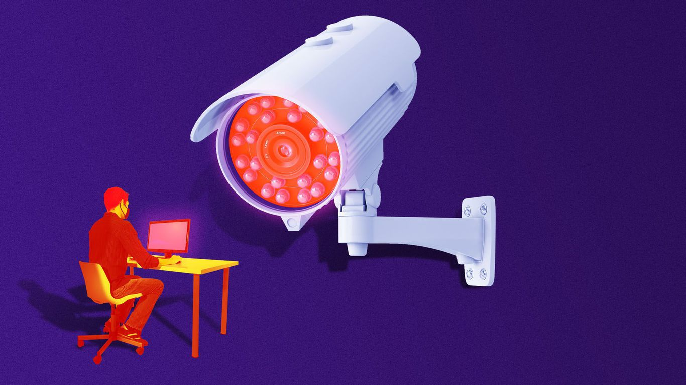

The coronavirus is ushering in a new era of surveillance at work
Microsoft is the latest big company to embrace the work-from-home experiment, announcing it will allow
all employees to telework up to 50% of the time and some employees to work remotely forever.
Posted On: 2020-10-13T00:00:00
Posted By: Erica Pandey
Miriam Kramer, author of Space
Oct 13, 2020 - Science
Constellations of Earth-gazing satellites are giving new and growing markets an unprecedented view — and understanding — of the planet.
Why it matters: The Earth observation market was once focused on collecting huge amounts of raw data, but companies are now working to pull in revenue by creating tools to analyze that information for customers.
Go deeper (2 min.read)
Posted On: 2020-10-13T00:00:00
Posted By: Miriam Kramer
Governments around the world have seized on the coronavirus crisis as an opportunity to expand digital surveillance and harvest more data on their citizens, according to a report out Wednesday from Freedom House, a democracy and human rights research group.
Why it matters: Privacy advocates have warned since early in the pandemic that the tech behind efforts to conduct contact tracing and enforce quarantines and other public safety protocols could be abused and made permanent, particularly in authoritarian countries like China.
Posted On: 2020-10-14T00:00:00
Posted By: Kyle Daly

Content Date: 2020-10-13
Download Date: 2021-05-15
Document ID: L0C04CGBX